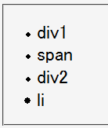
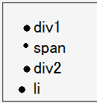

li要素開始タグの直後に子要素の開始タグが置かれている場合に、li要素のリストマーカーのサイズが子要素のfont-sizeプロパティの値を反映した値になる。ただし、これは子孫要素がブロック要素であり、リストマーカーがグリフタイプの場合に発生する。
<ul> <li><div style="font-size:2em;">div1</div></li> <li><span style="font-size:2em;">span</span></li> <li><div><div style="font-size:2em;">div2</div></div></li> <li style="font-size:2em;">li</li> </ul>
1番目のリストアイテムは子要素がブロック要素の場合、2番目は子要素がインライン要素の場合、3番目はli要素、子要素、孫要素の開始タグが連続している場合、4番目はli要素の文字サイズを指定した場合です。
Moz1.0.2での表示（標準モード）
Opera7.02での表示（標準モード）
li要素と子要素の間に別のボックス（匿名ボックスを含む）がある場合、この現象は発生しません。
<ul> <li>!<div style="font-size:1.5em;">div1</div></li> </ul>
Opera7.02では標準・互換モードともに不具合の発生が確認されました。